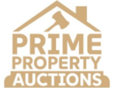

Results
Named clients, real companies, and specific results. This is what working with Colin actually looks like.
Property
"Colin's sales training with the team at Prime was truly transformative. The results have been immediate and measurable — a real shift in how the team approaches every conversation."

Business Owners
"Working with Colin Campbell has been a game-changer for both me and my team. The labelled frameworks made best practice immediately practical — and his support didn't end when the workshop finished. The follow-up consulting calls have been just as valuable."
Healthcare
"What stood out most was how practical and relevant the training was to our business. Following the training, our account manager successfully closed two sales — his first two sales — which was a fantastic early result and a real testament to the value of the session."
We recently took part in a sales training workshop with Colin for our private medical insurance company, and the experience was extremely valuable from start to finish. Colin came out to visit us on site and delivered a completely bespoke presentation tailored specifically to our business. It was obvious he had invested a considerable amount of time preparing for the session and understanding our challenges before the day itself. The material was clear, well structured, transparent, and easy to follow, with plenty of opportunity for questions and discussion throughout.
One of the biggest challenges we were facing was building a consistent pipeline of quality leads. Colin took the time to explore this with us in detail and provided practical strategies, actionable advice, and a clear process we could immediately start implementing. He helped us create structure around the full sales journey — from generating enquiries, through to conversion, and then ongoing customer care afterwards.
The framework and guidance he provided have already been incredibly useful, particularly for our new account manager, who has been able to use the process confidently within the business. In fact, following the training, our account manager successfully closed two sales — his first two sales — which was a fantastic early result. We would highly recommend Colin's training to any sales-focused business looking to improve structure, strengthen their sales process, generate more opportunities, and create a clearer customer journey.
Property
"What made it a great investment for me is that I was able to take what we had learned and apply it in real time to close £8,000 worth of sales by the time we had finished the programme."
I first heard about Colin's sales training through a mutual friend and it was exactly what I was looking for at the exact right time! We have fully redesigned my entire sales process to create something far slicker and far more strategic to use going forward.
The main things I wanted to build out and get his expertise on were a more in-depth sales process for the leads I have coming in, how to structure and implement email marketing into the sales process, and creating a better framework for my sales calls to drive more conversions. We did all that, and more.
I would highly recommend Colin and his sales training package! It's easy to implement, quick to grasp and actually works in action. Not only that, he was always available on WhatsApp for any of my 1 million questions, going over and above to help me get what I was looking for.
Financial Services
"In the last 6 weeks alone, we've doubled the clients we look after, and the business's revenue."
Wanted to say a massive thank you. We've worked together now for the last 8 months and you've really improved my confidence in communicating, and helped develop a repeatable process for successfully taking on new clients. In the last 6 weeks alone, we've doubled the clients we look after, and the business's revenue. Appreciate the time and effort you put into the sessions Col and the regular accountability.
Professional Services
"It didn't feel like an off-the-shelf programme, but just like working with someone who'd taken the time to understand my world before trying to help me navigate it."
I've spent the last 15 years in sales, most recently as a Sales Director and Head of Sales. When I moved into a new industry as a Business Development Manager, I needed to learn what works in the current market — AI, inbox saturation, the sheer volume of outreach people receive — and I needed to do this quickly. What really stood out was how quickly Colin got to grips with my industry. Using the right terminology, the right examples, and the right framing for the problems I was actually facing.
The balance he strikes between being personable and professional is spot on. Results wise — my pipeline is bigger, I'm getting more connections on LinkedIn, followers are up by about 600 after 2 months work, and the progress made on my existing pipeline has also been telling. The foundation is there, and perhaps more importantly, I now have a framework I can hand down to future hires.
"I can now confidently guide prospects during a discovery call to uncover what truly matters to them."
Before working with Colin, my prospecting and outreach were almost non-existent, and I didn't have a clear strategy to change that. Now, with the structure, follow-up systems and clarity around how to lead conversations, I can confidently guide prospects during a discovery call to uncover what truly matters to them.
I'm more consistent with my time, and my diary is now more structured, which is what I have been craving. I finally know what 'good' looks like in terms of activity and quality. As a result, I'm moving into bigger opportunities with far more confidence that I have the processes in place to ensure I make the most of any discussions I have with potential new clients.
Performance & Sport
"He gave me enough structure to improve while still staying authentic to how I like to work. It was exactly the blend I needed at that stage of the journey."
I worked with Colin on sales and communication coaching when I was about three months into starting my business. He gave me clear tools and techniques for improving the flow of a sales call, particularly the discovery call. I naturally ask a lot of questions anyway, but it was reassuring to know I was on the right track — and he also gave me practical ways to sharpen things further.
I had a really good experience with Colin. Sales and communication wouldn't be the most natural part of my skill set, but he gave me enough structure to improve while still staying authentic to how I like to work. It was exactly the blend I needed at that stage of the journey.
Start with a free discovery call. No hard sell. Just a conversation about where you are and what would move the needle.
Book a Free Discovery Call